For each system, the left panel is the input video; the right panel is a forward simulation driven by the physical parameters EMMA recovered from that video.
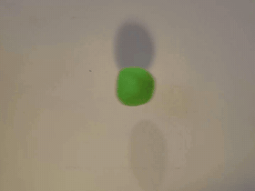
actual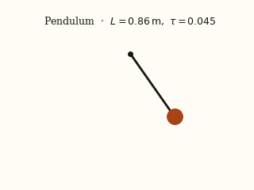
EMMA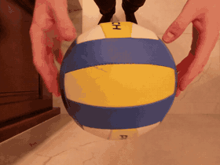
actual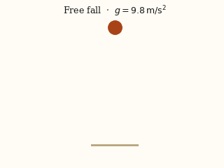
EMMA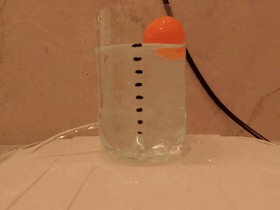
actual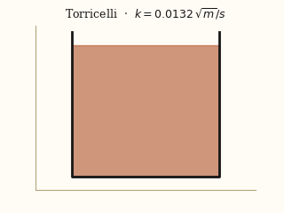
EMMA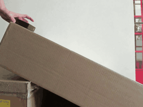
actual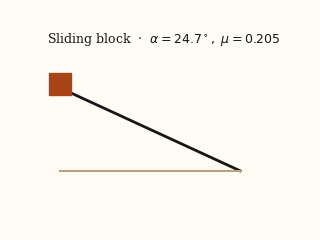
EMMA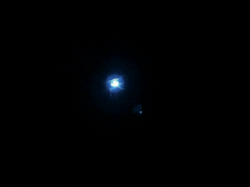
actual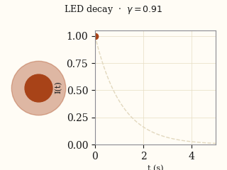
EMMA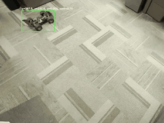
actual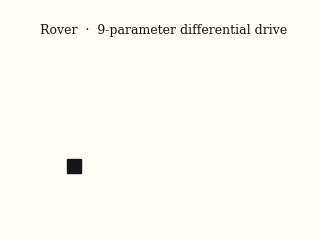
EMMA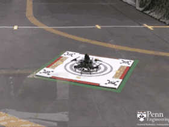
actual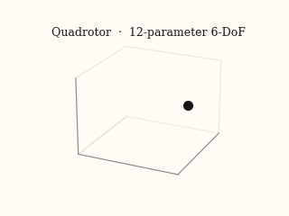
EMMAPoint a camera at the system, or hand EMMA a published plot. Provide its equation of motion. EMMA recovers the dynamical parameters, the hidden actuation, and the coordinate frame, all inside one continuous-time model. When audio is available, the same pipeline fuses it with video to resolve states that video alone cannot see.
dx/dt = f(x, u; θ) and the parameters you want recoveredWe introduce EMMA, a physics-informed multimodal framework that recovers all identifiable dynamical parameters of a system directly from raw video, audio, and image-based time-series observations. Unlike prior video-only approaches that struggle with occluded states, hidden actuation inputs, or assumptions about known initial conditions and coordinate frames, EMMA performs joint inference of explicit parameters, implicit dynamical components, and calibration invariants within a unified continuous-time model.
Across 100+ scenarios including five standard dynamical benchmarks (75 Delfys videos), real-world rover and quadrotor systems with hidden inputs, and simulation-chart case studies spanning biological and chaotic systems, EMMA delivers robust multi-parameter recovery and significantly outperforms existing single-modality and equation-discovery baselines.
EMMA is not data-driven equation discovery. The user supplies the parametric structure of the governing ODE; EMMA solves the inverse problem of recovering its parameters, along with any latent forcing and invariants, from multimodal observations.
EMMA closes the loop with a physics-informed loss: simulate forward using the recovered $\boldsymbol{\theta}$, compare to the observed trajectory, and backpropagate through the ODE solver until the two agree.
Parameter recovery from a differential-drive rover using synchronized video and audio. The demo shows the rover scenario only; pendulum, quadrotor, and simulation-chart results are covered in the paper.
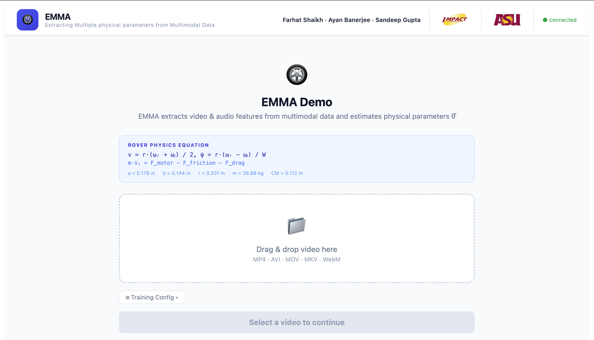
Sense. Learn. Verify.
EMMA follows a three-step pipeline from raw data to verified parameters. Video or chart images are the visual input; audio extends the same pipeline into the multimodal setting.
Raw modalities are converted into time-aligned signals through modality-specific pipelines.
A Liquid Time-Constant network models the system's latent dynamics in continuous time.
A differentiable ODE solver simulates the recovered parameters and checks them against the observations.
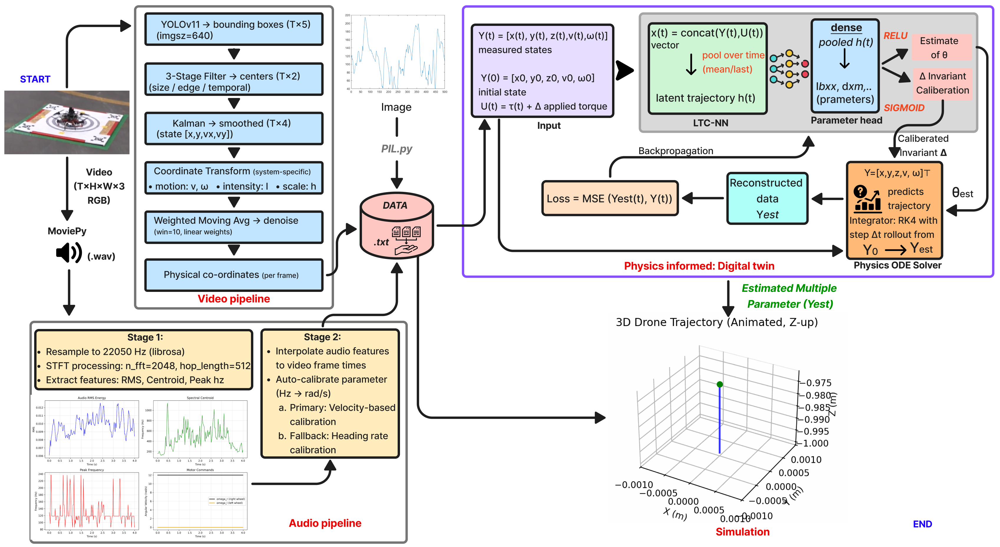
h(t) and
predicts physical parameters θ. A differentiable physics solver
validates predictions, enabling end-to-end gradient flow.
EMMA is evaluated on five canonical video benchmarks, real-world platforms with hidden forcing, and chart-based simulation studies spanning biological and chaotic regimes.
Compared against PAIG, NIRPI, and Delfys on the video benchmarks and PySINDy on the chart-based simulations. Rover and quadrotor under hidden forcing are reported as first-of-their-kind results. Full tables, ablations, and per-system comparisons are in the paper.
@InProceedings{Shaikh_2026_CVPR, author = {Shaikh, Farhat and Banerjee, Ayan and Gupta, Sandeep}, title = {EMMA: Extracting Multiple physical parameters from Multimodal Data}, booktitle = {Proceedings of the IEEE/CVF Conference on Computer Vision and Pattern Recognition (CVPR)}, month = {June}, year = {2026}, pages = {1716-1725} }